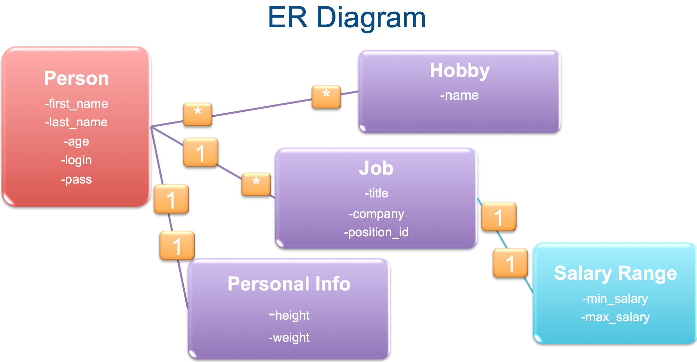

ER
One-to-One Association
- One person has exactly one personal_info entry
- One personal_info entry belongs to exactly one person
- The “belongs to” side is the one with a foreign key
1 | rails g model personal_info height:float weight:float person:references |
db/migrate/_create_personal_info.rb
1 | class CreatePersonalInfos < ActiveRecord::Migration[6.0] |
1 | rake db:migrate |
app/models/person.rb
1 | class Person < ApplicationRecord |
app/models/personal_info.rb
1 | class PersonalInfo < ApplicationRecord |
More Methods
you have build_personal_info(hash) and create_personal_info(hash) methods on a person instance
Test
1 | zhang = Person.first |
One-to-Many Association
- One person has one or more jobs
- One job entry belongs to exactly one person
- The “belongs to” side is the one with a foreign key
1 | rails g model job title company position_id person:references |
db/migrate/_create_jobs.rb
1 | class CreateJobs < ActiveRecord::Migration[6.0] |
1 | rake db:migrate |
app/models/person.rb
1 | class Person < ApplicationRecord |
app/models/job.rb
1 | class Job < ApplicationRecord |
More Methods
- person.jobs = jobs
- person.jobs << job(s)
- person.jobs.clear
Many-to-Many
- One person can have many hobbies
- One hobby can be shared by many people
- Need to create an extra (a.k.a. join) table (without a model, i.e. just a migration)
- Convention: Plural model names separated by an underscore in alphabetical order
1 | rails g model hobby name |
db/migrate/_create_habbies_people.rb
1 | class CreateHabbiesPeople < ActiveRecord::Migration[6.0] |
1 | rake db:migrate |
app/models/person.rb
1 | class Person < ApplicationRecord |
app/models/hobby.rb
1 | class Hobby < ApplicationRecord |
Rich Many-to-Many Association
- Sometimes, you need to keep some data on the join table
- You need to store grandchild relationships on a model, like Person -> Job -> SalaryRange
- ActiveRecord provides a
:throughoption for this purpose - Basic idea: you first create a regular
parent-childrelationship and then use the child model as a join between the parent and grandchild.
1 | rails g model salary_range min_salary:float max_salary:float job:references |
db/migrate/_create_salary_ranges.rb
1 | class CreateSalaryRanges < ActiveRecord::Migration[6.0] |
1 | rake db:migrate |
app/models/salary_range.rb
1 | class SalaryRange < ApplicationRecord |
app/models/job.rb
1 | class Job < ApplicationRecord |
app/models/person.rb
2
3
4
5
6
7
8
9
10
11
has_one :personal_info
has_many :jobs
has_and_belongs_to_many :hobbies
has_many :approx_salaries, through: :jobs, source: :salary_range
def max_salary
approx_salaries.maximum(:max_salary)
end
end
# Average, minimum and sum also available...
More Methods
1 | lebron = Person.find_by last_name: "James" |